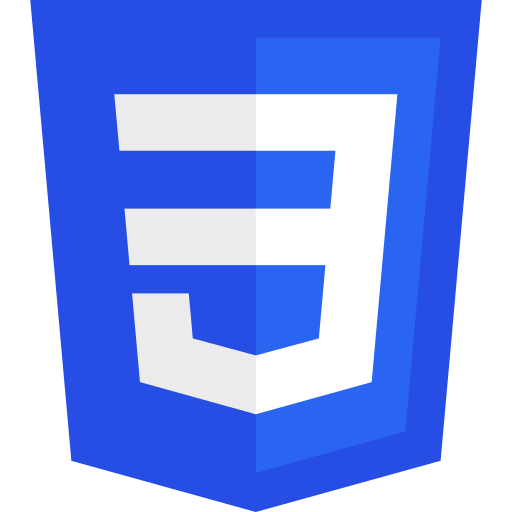
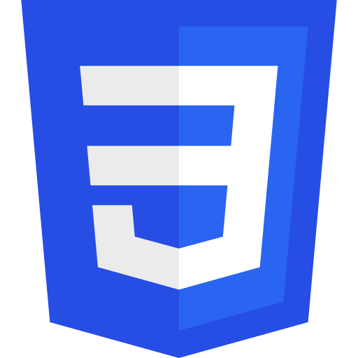

Development
Ik heb over de jaren heel wat kennis opgedaan met verschillende technologieen, applicaties en programmeertalen.
| Python | |
|---|---|
| Project AniSearch |  |
|
Samen met de leerlingen en leraren van De Lift Education in Diest hebben we voor de Hagelandse 101-wandeling een appje ontwikkelt die de progress van wandelaars bijhoudt door GPS-tracking. Bij dit project kon ik kennis maken met Android development, een beetje back-end, en hoe je moet omgaan met gradle en verschillende libraries van Google. |
|
| Android Studio / Kotlin | |
| Project Hagelandse 101 | |